漫谈Linux系列之一
0、Linux 文件漫步
1、如何新建一个文件 hello.sh？

2、如何向文件里面添加内容？
三种方法：
重定向 >
nano
上古神器 vi （参考蓝桥云课免费实践课程）

3、那么hello.sh的创建者是谁？大小是多大？什么时候创建的？等信息如何查看？
也就是说一个文件出除了文件内容以外，还有哪些属性？

可以使用如下的命令查看hello.sh的属性：
[root@lsr ~]# ls -l hello.sh -rw-r--r-- 1 root root 12 3月 9 11:55 hello.sh4、Linux 文件内容如何查看呢？
使用cat more less head tail 等命令查看文件内容。
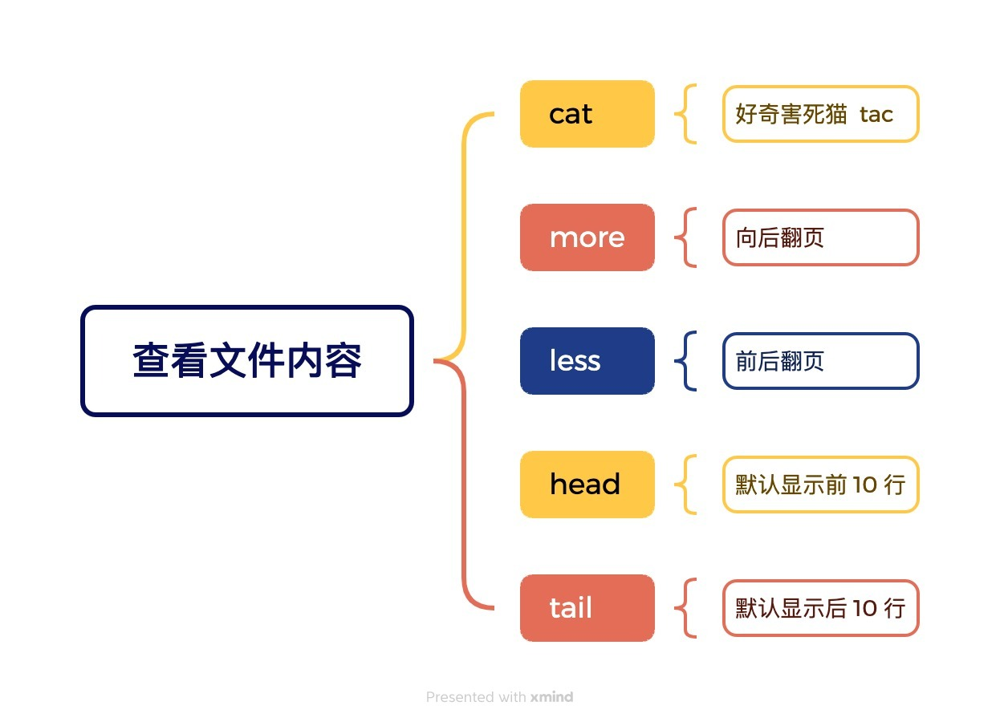
[root@lsr ~]# cat hello.shhello world1、Linux文件深度探索？
1、hello.sh文件在哪里？
可以使用搜索命令查找hello.sh。
Linux常用的搜索命令如下：
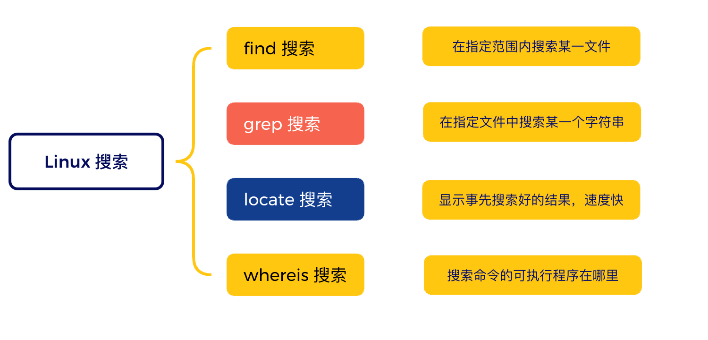
[root@lsr ~]# find / -name hello.sh /root/hello.sh2、Linux与Windows的不同：目录结构
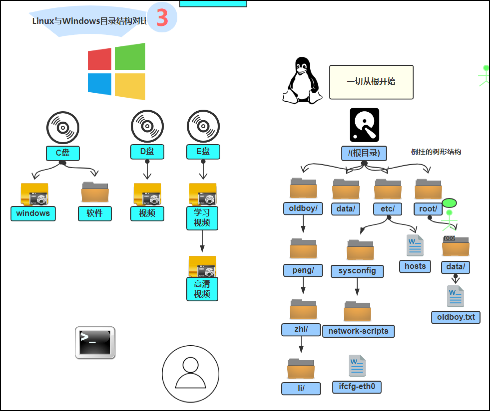
Linux是一颗倒置的树形结构。而Windows是很多颗树。
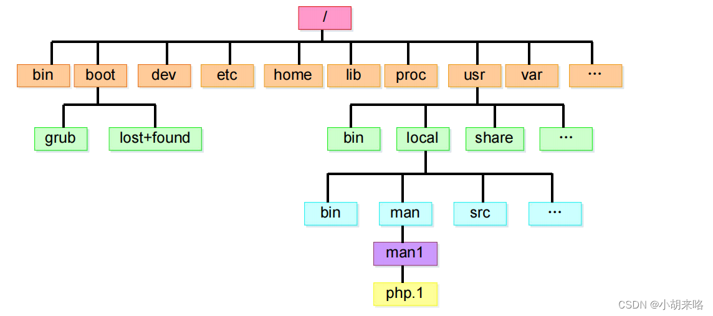
也就是说 Linux 的任何一个文件都是存在于某一个目录里面。目录相当于树根和树枝，文件相当于叶子。
Linux默认的一级子目录的作用。
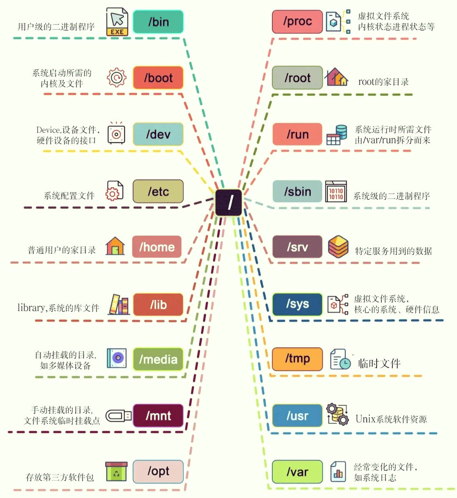
这些一级子目录都是安装系统时自动生成的，不要轻易改变。
3、如何操作Linux的文件和目录？
Linux系统中常见的访问文件和目录的命令主要有以下几个？

上述几个命令必须要熟练的使用。
必备知识：绝对路径和相对路径的理解。
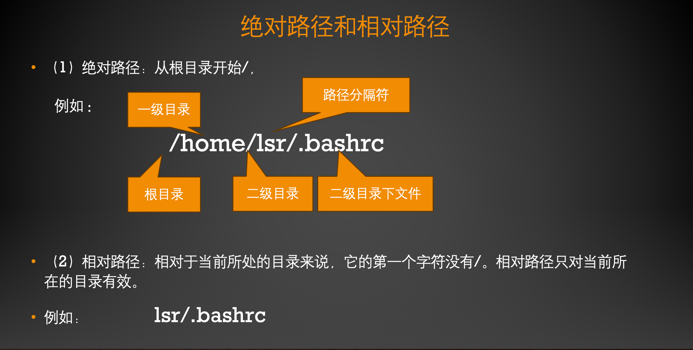
还有就是一个小数点和两个小数点的理解。
一个小数点 . 表示当前目录
两个小数点 .. 表示当前目录的上一层目录
4、一个文件最终是存储在硬盘上的，那么究竟是怎么存储的？

文件存储在硬盘上，就像文字存储在字典上的方法类似。

字典可以分为两个部分：前半部分是索引（索引里面存储了文字的笔画、发音、部首等属性信息），后半部分是存储的文字。（根据前面的索引可以找到该文字在哪一页上存储，从而便于访问）
对于一个文件而言，也是这样，如下图所示。硬盘的前半部分成为 inode区域，后半部分成为数据区。inode区域类似于字典的索引，保存每个文件的属性（大小、日期、创建者、权限等）；后半部分保存的是文件的真正的内容。

每个文件都有一个唯一的 inode编号。inode 里面存储了文件的属性及一个指向数据区域的指针。
那么如何理解呢？比如：一个名为 /data/file1.txt 的文件。我们怎么通过类似查字典的方法找到该文件呢？
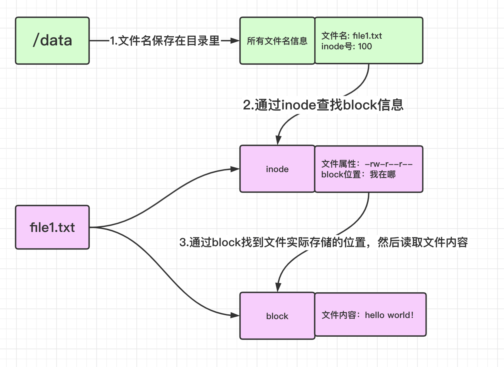
5、实际操作的角度来探索一下这个好玩的问题。
比如/root/hello.sh 文件。
如何找到其 inode和数据区的内容呢？
探索步骤：
（1）找到 / 目录的inode 号 ls -id /
（2）找到 /root 目录的 inode 号 ls -i /
（3）找到 /root/hello.sh 文件的 inode 号. ls -li /root/hello.sh
（4）通过 hello.sh的 inode号找到其对应的数据块的编号 xfs_db -r /dev/vda3
（5）读取该文件的真正的内容。 inode 93451 cat hello.sh
具体步骤如下所示：

6、能看懂这个图么？面试就没有问题了

不懂也没有关系，以后慢慢学。
2、inode里面存储了啥？（非常重要）
还是这张图：

其中第一个字段的第一个字符，先来理解一下：

表示的是 Linux 的文件类型。那么 Linux 有几种类型的文件呢？
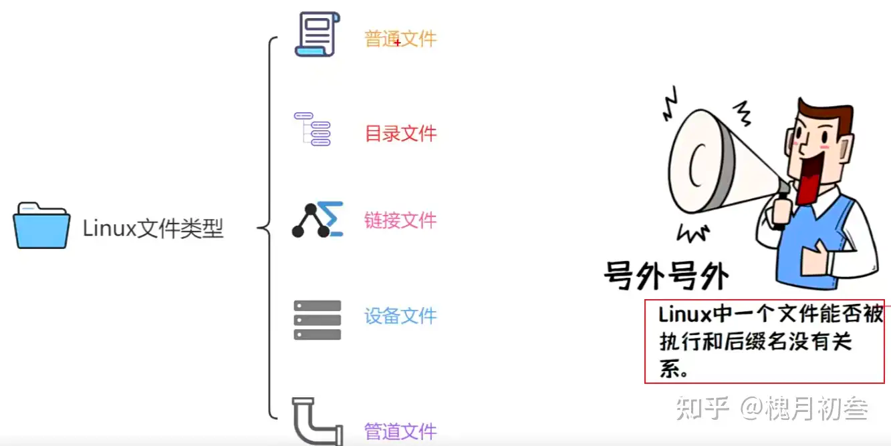
那么这几种类型分别怎么表示呢？

使用命令的话是这样查看的：

1、设备文件（写驱动的必须要熟悉，就业的好方向）
上帝托梦给我说：一切皆文件：漫画图解unix的Everything is file!

常见的字符设备：键盘、鼠标、打印机等。常见的块设备：硬盘、U 盘、SD 卡等。网络接口设备：网卡等。
几乎所有的设备文件都保存在/dev 目录下。
2、链接文件（面试必问）
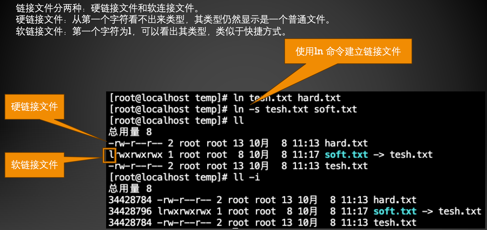
软链接和硬链接的区别？

面试经典问题：给一个文件同时建立一个硬链接和软链接，删除源文件后，还能否访问该文件？

面试能过关了么？
3、有趣的管道文件
玩个好玩的游戏：
创建一个管道文件，把第一个终端中的内容，显示在第二个终端中。

管道命令 ｜
把第一个命令的输出当做第二个命令的输入。


7、还有一个面试小题目 Linux 的时钟

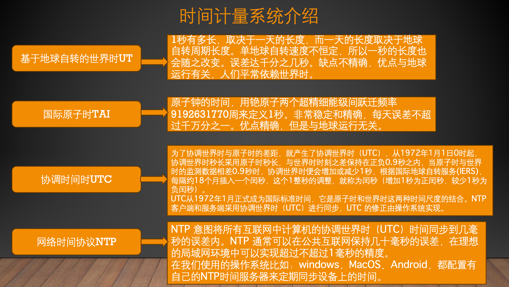

8、危险的 Linux 命令 不面试但是会让你丢掉工作命令
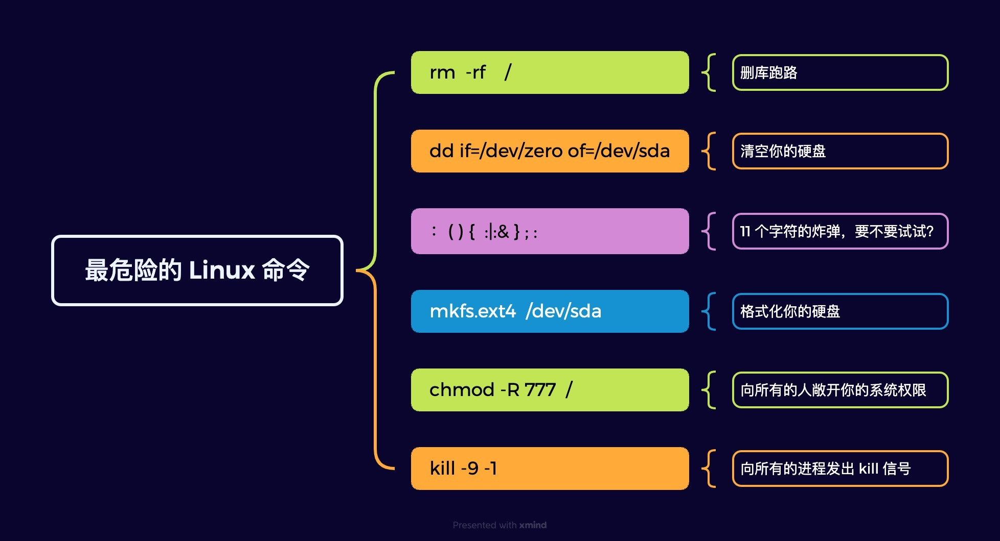
3、一图胜千言

4、基础命令总结
第 3 章总结
能够通过图形及字符界面登录系统
正确的关机方式shutdown
Linux 的 7 个不同的启动目标
获取帮助man info help
shell 基础：命令 选项 参数
连续执行多个命令的两种方法 ； &&
命令替换 %（）
命令别名
管道
重定向
最重要的编辑器vi 参考蓝桥云课平台的 免费课程
第 4 章总结
Linux 文件类型
Linux 目录结构
Linux 文件及目录的相关命令 pwd cd ls touch mkdir rmdir cp mv rm wc
链接文件ln ln -s
第 5 章总结
文本文件查看 cat more less head tail
处理文本内容 sort uniq cut comm diff
查找 find grep locate
系统信息显示 uname hostname free du
日期和时间 cal date hwclock
5、非要精简的话，必须掌握这 10 个

6、随堂测试（10 分钟内完成）